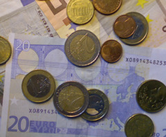

|
You end up having a small fortune in your national currency. You have found a fast way of travelling around in your city, and discovered that there is an uncommonly large amount of independent money exchange offices (most of them opened just in the previous week). The exchange offices are privately owned, and offer various different exchange rates. You decide to use your small fortune to exploit the exchange rate differences by taking your money around and converting it back and forth between all the different currencies. |  |
Your goal is to finish with the most money possible, in your own currency, by the end of the day.
All money in the city is managed electronically, so there are no rounding rules; you can have and change fractional amounts of money.
First line: N K S, where N is the number of currencies (currency 0 is your own national currency); K is number of exchange offers and S is the amount of money you start with.
Next K lines are offers in the following format: A_i B_i R_i M_i, which means converting from A_i to B_i at rate R_i, at most M_i amount of money.
| Input | Output |
|---|---|
2 3 1000 0 1 0.8 500 0 1 0.9 400 1 0 1.2 10000 |
32 |
In this example, the first offer means that you can give them money in currency 0, and they give you 0.8 times that much in currency 1. During the whole day, you can give them at most 500.